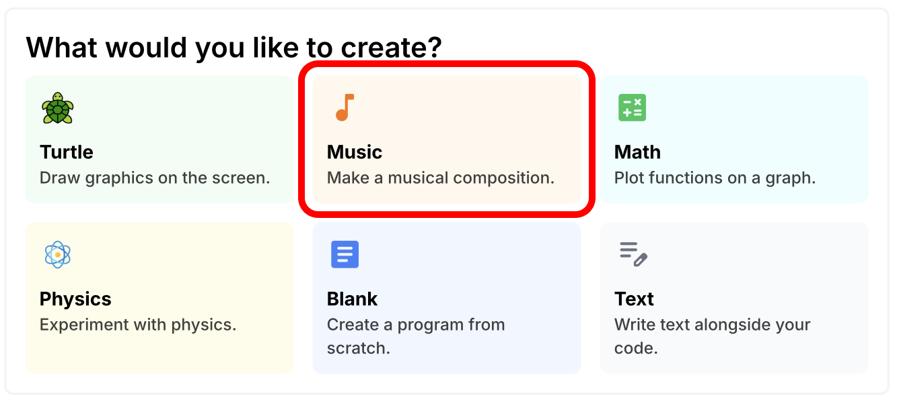
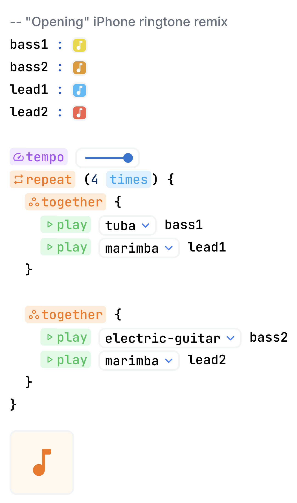

{% include "slide-logo.html" %}
Music and Variables
Students will be able to:
- Identify patterns in music
-
Compose a simple piano melody with
variables
- Compose a song with multiple instruments
- Compare variables vs. repetition
Today's plan:
- Warm up: Music video
- Guided practice: Setting up music
- Activity: Composition (2 days)
- Presentations and exit ticket
{% include "slide-footer.html" %}
Warm up: Music video
Source: Rousseau (YouTube)
Warm up: Music video
Share your pattern with a partner.
Could you use
repeatrepeat
to play Twinkle Twinkle Little Star? Why or why not?
Guided practice: Setting up music
-
Open your computers to Wipple
- Click Music

Activity: Code a song
- With a partner, create your own song!
-
You have the rest of today and some time
tomorrow
-
Must have at least
3 variables,
2 instruments,
and
1 repeat
- Switch roles every 15 minutes
- Everyone will present tomorrow!

Presentations!
Explain how you made your song.
Exit ticket (on your own)
- Upload your code (click Print)
-
How many
variables
did you use and what were their names? Why did you choose these
names?
-
Are variables and
repeatrepeat
the same? If so, how? If not, what makes them different?
- What about your song are you most proud of?
- Quickly answer the survey questions